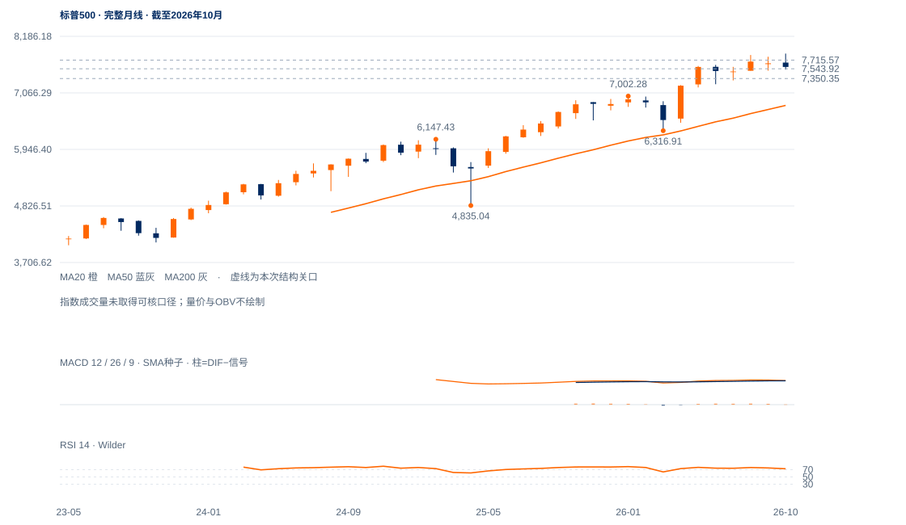

修复拉锯
未来1—5日偏向反弹后的拉锯，7544—7572新上窗口能否保持，决定能否继续接近7715.57原中峰。
未来1—5日偏向反弹后的拉锯，7544—7572新上窗口能否保持，决定能否继续接近7715.57原中峰。
未来2—6周以7350—7716内反复修复为主。原7715.57两日过滤通过后，才提高再试7845的判断；若反抽持续受阻，低点再测将先于重启主升。
未来1—3个月偏向长期牛市中的整理。7350实际低点与7304完整10月均衡附近能否形成较高周谷是关键；连续两周收低7350则调整风险升级，6818是更远中期均衡参照。重新周收站稳7845才恢复明确的新高扩展。

展开图表 ↗2022年3491.58、2025年4月4835.04、2026年3月6316.91的大低点持续抬升，10月月收7580.07仍高于10/20月均线7304.23/6818.14。长期升势尚未出现完整反转，但8月7816.70至10月7844.52只形成小幅新高，顶部推进明显减慢。月RSI71.70反映10月仍强，不能覆盖11月已经发生的价格损伤。
9月7507.77的周级低点已被11月7350.35打穿，出现向下结构警报；当前反弹尚未形成已确认的较低周峰后再下破，也未完成较高周谷后的再上破。故判断为长期上行中的调整，强度低于“牛市立即恢复”，也不足以直接宣布主要熊市。
长期较高大谷仍在，近端反弹峰逐步降低。7544—7572新上窗口保持与7715.57中峰回收，决定反弹能否穿过近期供应。
10月6日7844.52后，10月21日7770.40、28日7758.43、11月4日7715.57依次受压。7592.40仍低于最后中峰；11月5日7350.35低点只完成了局部反弹。
20日线7618.15、50日线7671.18均在上方。11日收7619.38，12日回7592.40；200日线7337.35仍在下方，支持修复有空间，但没有替代中峰确认。
11日形成7543.92—7571.88整日上缺口；12日低7550.84进入缺口但未填到7543.92，收盘仍在其上。窗口支撑正在被测试，尚非已完全失效。
连续两个完整美股日收高于7715.57，保留原时间过滤；7618—7671先作为近端回收检验。
日收低于7543.92先削弱近端承接；原7350.35日收失守才触发原结构受损条件。
大低点链条未坏，最新价格也仍高于10月均衡；若反弹站稳7716并抬高回测低点，当前谨慎判断可能低估上行恢复速度。
| 周期 | 最后完整柱 | 图示柱数 | RSI14 | ATR14 | MACD柱 |
|---|---|---|---|---|---|
| 日线 | 2026-11-12 | 185 | 48.37956 | 106.98639 | -3.19974 |
| 周线 | 2026-11-06 | 156 | 44.93298 | 186.89022 | -53.82694 |
| 月线 | 2026-10-30 | 96 | 71.69467 | 356.86301 | 22.4071 |
美股价格拆股调整、不含分红再投资。完整周线至11月6日；11月进行中。指数成交量与全成分广度受限。